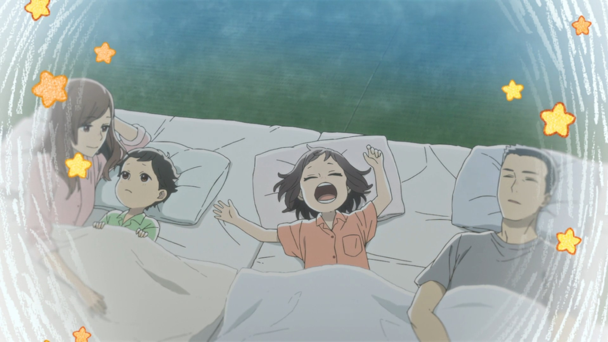

Udon no Kuni no Kiniro Kemari Ending – Sweet Darwin by GoodWarp

Nemurenai yoru wa kou shite
Himitsu no hanashi o shiyou
AACHI no mukou minato no hi ga
Kaze no naka sotto yureru
Negai hakobu SHIPPU
Yubisashi kazoeru
Kimi no SHIRUETTO
Waratte yo hora
Oh baby, sweet darwin
Bokura tabi ni deyou
Haruka matatonai
Kyou o aizu ni shiyou
Oh baby, sweet darwin
Soshite nani o shiyou
Namonai nidoto nai
Asu mo tsurete ikou
Komori-uta madoromu koe
Mukashibanashi o kasanete
Kawari yuku AAKEEDO no sumi
Kawaranai futatsu no kage
Omoidasu WANSHIIN
Kaoru you sumikiru
Kushakusha no SUNAPPU
Kazarazu warau
Oh baby, sweet darwin
Bokura tabi ni deyou
Kimi no hohaba de
Kyou made kita deshou
Oh baby, sweet darwin
Zenbu wasurenu you
Namonai nidoto nai
Asu mo tsurete yukou
Sweet darwin
Bokura tabi ni deyou
Haruka matatonai
Kyou o aizu ni shiyou
Oh baby, sweet darwin
Soshite nani o shiyou
Namonai nidoto nai
Asu mo tsurete yukou
Asenai kagirinai
Kisetsu o tomo ni yukou